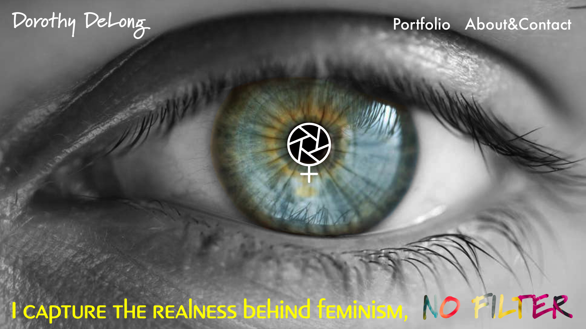
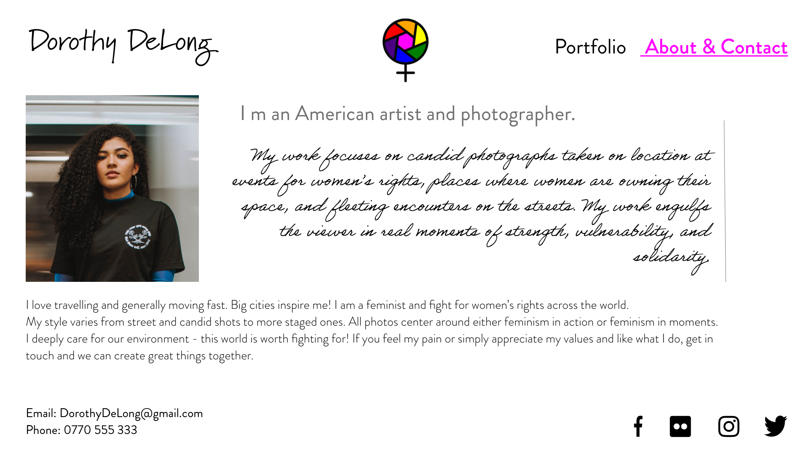

≪ На главную страницу
This design is for mobiles devices and desktops with landscape orientation. To see the prototype for mobile devices with portrait orientation please folow this link.
The above home page takes full browser window. Other pages can be accessed via the top right menu. The portfolio page can also be accessed by clicking on the aperture of a camera/female symbol in the middle of the eye. The icon expands on hover to advise the user it's clickable. Once clicked the icon is then replaced by an image of a camera aperture opening its lens. The size of the image must be the same as the size of the icon. The above effect takes 1 second. The Portfolio page then fades in after another second.
Portfolio Page

The Portfolio page is simple and easy to use. The header and the first portfolio photo should populate the whole browser window. More images are revealed on scroll. The images have their titles and short descriptions displayed in left or right bottom corner. They take full screen on click and can be closed by using an x button top right. Full screen mode also has a slider functionality where the user can use semi-transparent arrows on the right and left to navigate to other images. Dorothy's contact details are found in the footer for easy access. The user can access other options from the top right menu or go to the home page by clicking on Dorothy's name or logo.
About Page

Again, the idea is that this page takes the whole screen. Contact details are given in the footer. Portfolio page can be accessed via the top right menu and the home page is accessible via the logo or the artist's name in the header.